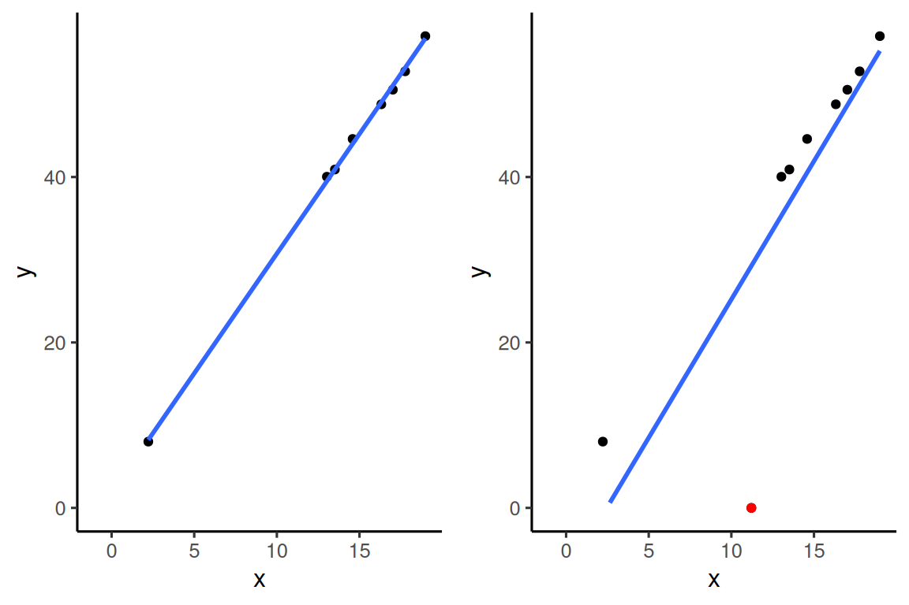

Lista 1
Regressão
1 Document Title
1.1 Questão 5
Mostre que a reta de regressão obtida pelo método de mínimos quadrados passa pelo ponto \((\bar{x},\bar{Y})\).
Proof. Como a reta de regressão é definida para todo \(x \in \mathbb{R}\), e como sabemos que \(\bar{x} \in \mathbb{R}\), o valor de \(\bar{x}\) pertencerá à reta de regresão.
Para encontrar o \(\hat{Y}\) associado a \(\bar{x}\), substituemos na equação da reta estimada:
\[\begin{align*} \hat{Y} &= \hat{\beta}_{0} + \hat{\beta}_{1}\bar{x} \\ \hat{Y} &= \bar{Y} - \hat{\beta}_{1}\bar{x} + \hat{\beta}_{1}\bar{x} \\ \hat{Y} &= \bar{Y} \end{align*}\]
Assim, para o valor de \(x = \bar{x}\), temos que o \(\hat{Y}\) é igual a \(\bar{Y}\). Assim, o ponto \((\bar{x},\bar{Y})\) pertence à reta de regressão.
1.2 Questão 8
Considere uma nova observação \((x_{n+1},Y_{n+1})\), com \(x_{n+1} = \bar{x}\). Sejam \(\hat{\beta}_{0}^{n+1}\) e \(\hat{\beta}_{1}^{n+1}\) os estimadores de mínimos quadrados obtidos utilizando todas as \(n+1\) amostras. Mostre que
\[\begin{equation*} \hat{\beta}_{1}^{n+1} = \hat{\beta}_{1} \end{equation*}\]
Interprete esse resultado e esboce um gráfico que represente essa propriedade.
Proof. Sabemos que o estimador de mínimos quadrados para \(\beta_{1}\) é dado por:
\[\begin{align*} \hat{\beta}_{1} &= \frac{\sum_{i=1}^{n} (y_{i} - \bar{y})(x_{i} - \bar{x})}{\sum_{i=1}^{n}(x_{i} - \bar{x})^{2}} \\ &= \frac{(y_{1} - \bar{y})(x_{1} - \bar{x}) + (y_{2} - \bar{y})(x_{2} - \bar{x}) + \ldots + (y_{n} - \bar{y})(x_{n} - \bar{x})}{(x_{1} - \bar{x})^{2} + (x_{2} - \bar{x})^{2} + \ldots + (x_{n} - \bar{x})^{2}} \end{align*}\]
Assim, o estimador para \(\beta_{1}\) incluindo a observação \(n+1\) é dada por:
\[\begin{align*} \hat{\beta}_{1}^{n+1} &= \frac{\sum_{i=1}^{n+1} (y_{i} - \bar{y})(x_{i} - \bar{x})}{\sum_{i=1}^{n}(x_{i} - \bar{x})^{2}} \\ \\ &= \frac{(y_{1} - \bar{y})(x_{1} - \bar{x}) + (y_{2} - \bar{y})(x_{2} - \bar{x}) + \ldots + (y_{n} - \bar{y})(x_{n} - \bar{x}) + (y_{n+1} - \bar{y})(\bar{x} - \bar{x})}{(x_{1} - \bar{x})^{2} + (x_{2} - \bar{x})^{2} + \ldots + (x_{n} - \bar{x})^{2} + (\bar{x} - \bar{x})^{2}} \\ \\ &= \frac{(y_{1} - \bar{y})(x_{1} - \bar{x}) + (y_{2} - \bar{y})(x_{2} - \bar{x}) + \ldots + (y_{n} - \bar{y})(x_{n} - \bar{x}) + 0}{(x_{1} - \bar{x})^{2} + (x_{2} - \bar{x})^{2} + \ldots + (x_{n} - \bar{x})^{2} + 0^{2}} \\ \\ \hat{\beta}_{1}^{n+1} &= \hat{\beta}_{1} \end{align*}\]
Assim, podemos ver que o estimador para o \(\beta_{1}\) não será alterado, caso a nova observação tenha valor \(x_{n+1} = \bar{x}\). Para visualizar esse efeito, consideremos o seguinte exemplo simples:
# Seed para reprodutibilidade:
set.seed(2001)
# Considere os valores de x vindos de uma normal N(10, 2):
df <- data.frame(
x <- rnorm(10, 10, 10)
)
# Os valores de y são gerados a partir de 3*x + N(0, 1):
df$y <- (3 * x + rnorm(10, 0, 1.5))
# Valores de Beta_0 e Beta_1 gerados a partir de mínimos quadrados:
(lm(y ~ x, data = df))##
## Call:
## lm(formula = y ~ x, data = df)
##
## Coefficients:
## (Intercept) x
## 0.01064 3.00722## [1] 11.21242# Considere agora uma nova observação, no ponto (x_barra, 17):
df2 <- data.frame(
x = c(df$x, x_barra),
y = c(df$y, 0)
)
# Verifique que a estimativa de Beta_0 foi alterada,
# enquanto que a de Beta_1 se manteve a mesma:
(lm(y ~ x, data = df2))##
## Call:
## lm(formula = y ~ x, data = df2)
##
## Coefficients:
## (Intercept) x
## -3.056 3.007